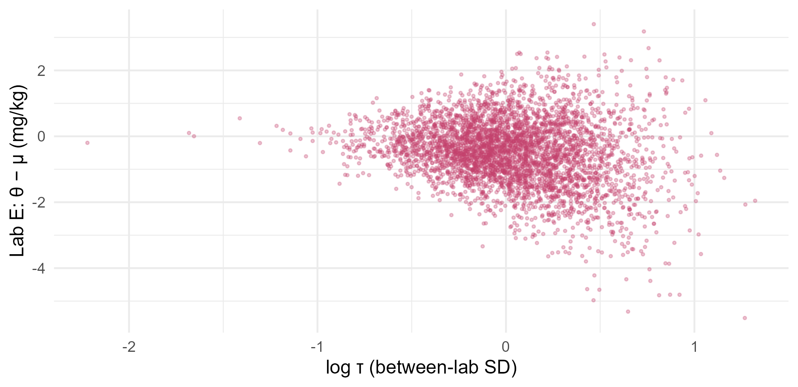

Module 5 · Lesson 11 of 13 Week 86 of 160 About 5–7 hours
Hierarchical models I
Partial pooling: learning from the group
Ten labs analyzed the same fuel for sulfur, with very different numbers of replicates. Compare complete pooling, no pooling and the hierarchical model in between, which shrinks each lab’s estimate toward the consensus by an amount the data choose. Compute its posterior exactly, check it against Stan, find which labs are probably biased, predict a new lab, and meet the funnel that makes the centered model hard to sample.
The plant’s fuel oil is sold on its sulfur content, so the lab’s sulfur results have to be right. Every year, the lab joins an interlaboratory study: a reference fuel goes to ten labs, each analyzes it several times, and each reports its mean and standard error. The results disagree by more than their standard errors allow. Each lab has a small bias of its own. The question is: what is each lab’s true mean, which labs are biased, and how far apart would a new lab’s results be?
| Lab | A | B | C | D | E | F | G | H | I | J |
|---|---|---|---|---|---|---|---|---|---|---|
| Replicates | 10 | 6 | 3 | 8 | 2 | 12 | 5 | 4 | 9 | 2 |
| Mean (mg/kg) | 47.18 | 49.99 | 48.75 | 47.75 | 46.89 | 48.95 | 49.57 | 50.33 | 49.33 | 47.06 |
| Standard error | 0.38 | 0.61 | 1.15 | 0.39 | 1.84 | 0.26 | 0.72 | 0.90 | 0.43 | 1.70 |
Labs E and J ran only two replicates each, and they have the two lowest means. Is that a real bias, or just noise? There are two extreme answers. Complete pooling says all ten labs measure the same thing, so combine everything into one number. No pooling says each lab is its own world, so take each mean at face value. A hierarchical model says the truth is in between, and lets the data decide where.
Ten labs, one fuel, ten answers. Who’s right? Hierarchical models are how you listen to everyone, but not equally. My favorite kind of group project!
In this lesson you’ll:
- compare complete pooling, no pooling and partial pooling
- see how a hierarchical model shrinks each group’s estimate
- compute the posterior of a hierarchical model exactly
- check it against Stan, and meet the funnel and the non-centered parameterization
- find the probably biased labs, and predict a new lab
Complete pooling and no pooling
Complete pooling estimates the common mean by weighting each lab by its precision, 1/\text{se}_j^2: Lesson 4’s precision-weighted average.
Your turn. Compute it, and its standard error.
Divide by the sum of the weights, w.
w <- 1 / se^2
c(pooled = sum(w * y) / sum(w), se = sqrt(1 / sum(w)))48.61 mg/kg, with a standard error of 0.16. That’s suspiciously precise. It assumes that every lab measures exactly the same thing, so the only differences are each lab’s random error. But lab A, with a standard error of 0.38, is 3.7 standard errors below it, and lab H, 1.9 above. The labs disagree more than their own errors can explain, so complete pooling is wrong, and its standard error is too small.
No pooling is the other extreme: each lab’s true mean is estimated by its own mean. That’s fine for lab F, with 12 replicates, but for E and J, with 2 each, it takes the noise at face value. And it can’t say anything about a lab that wasn’t in the study.
The hierarchical model
The hierarchical model treats the labs’ true means \theta_j as draws from a common distribution, whose mean \mu is the consensus value, and whose SD \tau is the between-lab SD:
y_j \sim N(\theta_j, \text{se}_j^2), \qquad \theta_j \sim N(\mu, \tau^2), \qquad \tau \sim \text{half-normal}(0, 2), \qquad p(\mu) \propto 1.
The second line is what makes it hierarchical: the labs’ parameters have a distribution, and its parameters, \mu and \tau, are estimated from the data too. They’re called hyperparameters, and their priors hyperpriors. Two limits explain the model. If \tau = 0, every lab has the same true mean: complete pooling. If \tau = \infty, the labs are unrelated: no pooling. The data choose \tau, and with it, how much pooling there is.
The assumption behind it is exchangeability: before seeing the results, we had no reason to expect any particular lab to be higher or lower than another, so their \theta_j are like draws from one distribution. If we did know something, for example that some labs use a different method, the model should include it, as a predictor (Lesson 12).
Given \mu and \tau, each lab’s posterior mean is a precision-weighted compromise between its own mean and \mu, Lesson 4’s normal-normal model again. The weight on \mu is the shrinkage factor
B_j = \frac{\text{se}_j^2}{\text{se}_j^2 + \tau^2}, \qquad E(\theta_j \mid \mu, \tau, y) = B_j\,\mu + (1 - B_j)\, y_j .
Noisy labs, with a large \text{se}_j, are shrunk a lot. Precise ones keep their own mean.
Your turn. With \tau = 1 and \mu at the pooled 48.61, compute every lab’s shrinkage factor and its shrunken estimate. Return them for lab E, the fifth.
The denominator adds the between-lab variance, tau^2.
tau <- 1
mu <- 48.61273
B <- se^2 / (se^2 + tau^2)
theta <- B * mu + (1 - B) * y
c(B_E = B[5], theta_E = theta[5], B_F = B[6], theta_F = theta[6])Lab E’s mean, 46.89, is shrunk 77% of the way to the consensus, to 48.22: with two replicates and a standard error of 1.84, its low result is mostly noise. Lab F’s, 48.95, is shrunk only 6%, to 48.93: its 12 replicates are trusted. Shrinkage isn’t a penalty for being different. It’s a penalty for being imprecise.
The posterior, exactly
For this model, the posterior can be computed without MCMC, in three steps (Gelman and others’ Bayesian Data Analysis, section 5.4):
- The between-lab SD, \tau. Integrating out \mu and the \theta_j leaves its marginal posterior as a formula, p(\tau \mid y) \propto p(\tau)\, V_\mu^{1/2} \prod_j N(y_j \mid \hat\mu_\tau, \text{se}_j^2 + \tau^2), which can go on a grid. The setup code’s
log_p_tau()computes its logarithm. - The consensus, \mu, given \tau: normal, centered at the precision-weighted mean \hat\mu_\tau with weights 1/(\text{se}_j^2 + \tau^2).
- Each lab, \theta_j, given \mu and \tau: the normal-normal shrinkage above.
Your turn. Put the posterior of \tau on the setup code’s grid, taus, and find its median and 95% credible interval.
Normalize the posterior by its own sum.
lp <- sapply(taus, log_p_tau)
post <- exp(lp - max(lp))
post <- post / sum(post)
cdf <- cumsum(post)
c(median = taus[min(which(cdf >= 0.5))], lower = taus[min(which(cdf >= 0.025))], upper = taus[min(which(cdf >= 0.975))])A posterior median between-lab SD of 1.03 mg/kg, with a 95% credible interval from 0.51 to 2.06. The interval excludes 0, so complete pooling is ruled out: the labs really do differ. But \tau is uncertain, as between-group SDs usually are with only ten groups. A full analysis averages over that uncertainty, instead of plugging in one value.
Your turn. Now all three steps: draw 4,000 values of \tau from the grid, then \mu given each \tau, then each lab’s \theta_j given both, and report the posterior means of the labs’ true means.
The conditional mean is the precision-weighted sum divided by the total precision, prec.
lp <- sapply(taus, log_p_tau)
post <- exp(lp - max(lp)) / sum(exp(lp - max(lp)))
set.seed(5111)
S <- 4000
tau <- sample(taus, S, replace = TRUE, prob = post) # step 1
v <- outer(tau^2, se^2, "+") # se_j^2 + tau^2, one row per draw
mu <- rnorm(S, rowSums(sweep(1 / v, 2, y, "*")) / rowSums(1 / v), sqrt(1 / rowSums(1 / v))) # step 2
prec <- outer(1 / tau^2, 1 / se^2, "+") # step 3: precisions add
theta_mean <- sweep(matrix(mu / tau^2, S, 10), 2, y / se^2, "+") / prec
theta <- matrix(rnorm(S * 10, theta_mean, sqrt(1 / prec)), S, 10)
setNames(round(colMeans(theta), 3), labs$lab)Labs E and J, whose means were 46.9 and 47.1, have posterior means of 48.25 and 48.26: pulled most of the way to the consensus. Lab A, at 47.18 with 10 replicates, stays low, at 47.40. The posterior mean of \mu is 48.72. The ranking changed, too: without pooling, E and J were the two lowest labs, and now A and D are.
Here’s the shrinkage, lab by lab:
ord <- order(labs$n)
sh <- data.frame(lab = factor(labs$lab, levels = labs$lab[ord]), n = labs$n, own = y, partial = colMeans(th))
ggplot(sh, aes(y = lab)) +
geom_vline(xintercept = mean(md), linetype = "dashed", color = "#3A1F35") +
geom_segment(aes(x = own, xend = partial, yend = lab), arrow = arrow(length = unit(0.15, "cm")), color = "#C2416C") +
geom_point(aes(x = own), color = "#2a78d6", size = 2.4) +
geom_point(aes(x = partial), color = "#C2416C", size = 2.4) +
geom_text(aes(x = 50.9, label = paste0(n, " reps")), size = 3.2, color = "grey40", hjust = 0) +
annotate("text", x = 46.75, y = 10.45, label = "own mean", color = "#2a78d6", hjust = 0, size = 3.4) +
annotate("text", x = 47.75, y = 10.45, label = "partial pooling", color = "#C2416C", hjust = 0, size = 3.4) +
coord_cartesian(xlim = c(46.7, 51.4), clip = "off") +
labs(x = "Sulfur (mg/kg)", y = "Lab, by number of replicates") +
theme_minimal(base_size = 12)![Each lab's estimate of the sulfur content, as two points joined by an arrow: from the lab's own mean (no pooling) to its hierarchical posterior mean (partial pooling). A dashed vertical line marks the consensus, 48.7 mg/kg. The labs are sorted by their number of replicates. Labs E and J, with 2 replicates each, move furthest, from about 47 almost to the consensus. Labs H, B and G, with 4 to 6, move noticeably, and lab C, already close to the consensus, hardly moves. Labs F, A, I and D, with 8 to 12 replicates, barely move, so A and D stay well below the consensus.](11-hierarchical-1_files/figure-html/unnamed-chunk-13-1.png)
The same model in Stan, and the funnel
In Stan, the model is a few lines. The obvious way to write it, the centered parameterization, is:
parameters {
real mu;
real<lower=0> tau;
vector[J] theta;
}
model {
tau ~ normal(0, 2);
theta ~ normal(mu, tau);
y ~ normal(theta, se);
}It ran with 3 divergent transitions:
#> $num_divergent
#> [1] 2 0 0 1
#>
#> $num_max_treedepth
#> [1] 0 0 0 0
#>
#> $ebfmi
#> [1] 0.8328442 0.8667000 0.9018811 0.8879878All three happened at small values of \tau, from 0.34 to 0.42, below 95% of the posterior. That’s the signature of the funnel. When \tau is small, the \theta_j are forced close to \mu, so the posterior is very narrow in their directions. When \tau is large, they spread out. A step size that suits the wide part is far too large for the neck, and the sampler diverges there, so the neck is under-explored and the draws are biased toward larger \tau. Here’s the funnel for lab E, from the exact draws:
ggplot(data.frame(log_tau = log(td), dev = th[, 5] - md), aes(x = log_tau, y = dev)) +
geom_point(size = 0.6, alpha = 0.3, color = "#C2416C") +
labs(x = "log τ (between-lab SD)", y = "Lab E: θ − μ (mg/kg)") +
theme_minimal(base_size = 12)
The fix is to change the parameterization, not the model. Write \theta_j = \mu + \tau z_j, with z_j \sim N(0, 1), and let Stan sample the z_j: they have the same width whatever \tau is, so there’s no funnel. This non-centered parameterization defines exactly the same model:
parameters {
real mu;
real<lower=0> tau;
vector[J] z;
}
transformed parameters {
vector[J] theta = mu + tau * z;
}
model {
tau ~ normal(0, 2);
z ~ std_normal();
y ~ normal(theta, se);
}It ran with no divergences at all:
#> $num_divergent
#> [1] 0 0 0 0
#>
#> $num_max_treedepth
#> [1] 0 0 0 0
#>
#> $ebfmi
#> [1] 0.7611760 0.7825335 0.8440611 0.7530742Non-centering helps when the data say little about each group, as here. When every group has lots of data, the centered version can be better. brms uses the non-centered parameterization for all its varying effects.
Your turn. The setup code doesn’t have Stan’s draws yet. Read them from data/stan_labs_draws.csv, and compare the posterior means of \mu and \tau with the exact computation’s 48.72 and 1.10.
The column is tau.
stan <- read_csv("data/stan_labs_draws.csv", show_col_types = FALSE)
c(mu = mean(stan$mu), tau = mean(stan$tau), theta_E = mean(stan$`theta[5]`))48.72, 1.11 and 48.24, against the exact 48.72, 1.10 and 48.25: the same posterior. (Column names like theta[5] need backticks in R.) For bigger hierarchical models, there’s no exact method, and Stan’s non-centered version is the way to go.
Which labs are biased?
Each lab’s bias is \theta_j - \mu, its true mean’s distance from the consensus. The reference fuel’s specification allows a lab to be 1 mg/kg off.
Your turn. Using the exact draws, find each lab’s posterior probability of a bias of more than 1 mg/kg in either direction.
Subtract the consensus draws, mu. R recycles the vector down each column.
lp <- sapply(taus, log_p_tau)
post <- exp(lp - max(lp)) / sum(exp(lp - max(lp)))
set.seed(5111)
S <- 4000
tau <- sample(taus, S, replace = TRUE, prob = post)
v <- outer(tau^2, se^2, "+")
mu <- rnorm(S, rowSums(sweep(1 / v, 2, y, "*")) / rowSums(1 / v), sqrt(1 / rowSums(1 / v)))
prec <- outer(1 / tau^2, 1 / se^2, "+")
theta <- matrix(rnorm(S * 10, sweep(matrix(mu / tau^2, S, 10), 2, y / se^2, "+") / prec, sqrt(1 / prec)), S, 10)
bias <- theta - mu # subtract each draw's consensus from every lab
setNames(round(colMeans(abs(bias) > 1), 3), labs$lab)Lab A has a 72% probability of being more than 1 mg/kg off, the only lab where it’s more likely than not. B (43%) and H (42%) come next. Labs E and J, with the most extreme raw means, are at 33%: their results were too noisy to convict them. A no-pooling analysis would have flagged E and J first. The hierarchical model flags A, which has 10 replicates and a consistent low result. That’s the lab to visit.
Your turn. A new lab joins next year’s study. Where will its true mean be? For each draw, a new lab’s \theta is a draw from N(\mu, \tau^2). Find the 95% predictive interval.
The new lab’s SD around the consensus is the between-lab SD, tau.
lp <- sapply(taus, log_p_tau)
post <- exp(lp - max(lp)) / sum(exp(lp - max(lp)))
set.seed(5111)
S <- 4000
tau <- sample(taus, S, replace = TRUE, prob = post)
v <- outer(tau^2, se^2, "+")
mu <- rnorm(S, rowSums(sweep(1 / v, 2, y, "*")) / rowSums(1 / v), sqrt(1 / rowSums(1 / v)))
set.seed(5112)
theta_new <- rnorm(S, mu, tau)
quantile(theta_new, c(0.025, 0.975))From 46.2 to 51.3 mg/kg. That’s the range a buyer’s lab could get for the same fuel, even with perfect repeatability, and it’s why fuel contracts specify a reproducibility limit. Neither extreme model can answer this: complete pooling says every lab gets 48.6, and no pooling knows nothing about labs it hasn’t seen. Predicting new groups is one of the hierarchical model’s main uses.
Challenge round
Challenge 1 · The eight schools. The most famous hierarchical example is from education: coaching programs for a test in eight schools, with estimated effects y = 28, 8, −3, 7, −1, 1, 18, 12 points and standard errors 15, 10, 16, 11, 9, 11, 10, 18 (Rubin, 1981). Repeat the exact analysis with a flat prior for \tau (the setup code’s log_p_tau() works for the labs only, so it’s written out here), and find school A’s posterior mean effect. Its own estimate was 28.
School A is the first column.
y8 <- c(28, 8, -3, 7, -1, 1, 18, 12)
s8 <- c(15, 10, 16, 11, 9, 11, 10, 18)
log_p_tau8 <- function(tau) {
v <- s8^2 + tau^2
mu_hat <- sum(y8 / v) / sum(1 / v)
0.5 * log(1 / sum(1 / v)) + sum(dnorm(y8, mu_hat, sqrt(v), log = TRUE)) # flat prior on tau
}
t8 <- seq(0.01, 40, length.out = 4000)
lp <- sapply(t8, log_p_tau8)
set.seed(5113)
tau <- sample(t8, 4000, replace = TRUE, prob = exp(lp - max(lp)))
v <- outer(tau^2, s8^2, "+")
mu <- rnorm(4000, rowSums(sweep(1 / v, 2, y8, "*")) / rowSums(1 / v), sqrt(1 / rowSums(1 / v)))
prec <- outer(1 / tau^2, 1 / s8^2, "+")
theta <- matrix(rnorm(4000 * 8, sweep(matrix(mu / tau^2, 4000, 8), 2, y8 / s8^2, "+") / prec, sqrt(1 / prec)), 4000, 8)
c(school_A = mean(theta[, 1]), quantile(theta[, 1], c(0.025, 0.975)), median_tau = median(tau))School A’s effect shrinks from 28 to a posterior mean of 11, with a 95% interval from −2 to 32. Here, the standard errors are large compared with the spread of the estimates, so the data can’t rule out \tau = 0, and every school is pulled strongly toward the overall 8 points. These eight numbers appear in almost every Bayesian textbook since Gelman and others’ Bayesian Data Analysis (section 5.5), and in Stan’s own documentation of the funnel.
Challenge 2 · How much does the hyperprior matter? With only ten labs, the prior on \tau deserves a sensitivity analysis (Lesson 3). Find the posterior median of \tau with three hyperpriors: half-normal(0, 2), flat, and a tighter half-normal(0, 0.5), which says that labs rarely differ by more than 1 mg/kg. The setup code’s log_p_tau() takes a log_prior function.
The tight hyperprior has an SD of 0.5.
median_tau <- function(log_prior) {
lp <- sapply(taus, log_p_tau, log_prior = log_prior)
post <- exp(lp - max(lp)) / sum(exp(lp - max(lp)))
taus[min(which(cumsum(post) >= 0.5))]
}
c(half_normal_2 = median_tau(function(t) dnorm(t, 0, 2, log = TRUE)),
flat = median_tau(function(t) 0),
half_normal_0.5 = median_tau(function(t) dnorm(t, 0, 0.5, log = TRUE)))1.03, 1.08 and 0.76. The two weak hyperpriors agree, so the data are doing the work. The tight one pulls \tau down by a quarter, and with it, the labs closer together. A hyperprior that strong would have to come from earlier interlaboratory studies, and should be reported as such.
Quick quiz
1. What does a hierarchical model assume about the groups’ parameters?
That’s between the two extremes: complete pooling (\tau = 0) and no pooling (\tau = \infty).
2. Which lab’s estimate is shrunk most toward the consensus?
The shrinkage factor \text{se}_j^2/(\text{se}_j^2 + \tau^2) depends on the lab’s precision, not on how far off it is.
3. What does exchangeability mean?
If something does distinguish them, such as the method a lab uses, add it to the model as a predictor.
4. Why does the centered parameterization of a hierarchical model cause divergent transitions?
The non-centered version, \theta_j = \mu + \tau z_j, removes the funnel.
5. Lab E’s raw mean is the lowest, but its probability of a bias over 1 mg/kg is only 33%. Why?
Partial pooling protects against over-reacting to noisy groups.
6. Which question can only the hierarchical model answer?
The distribution of the \theta_j, with \mu and \tau, describes the population of labs, including ones not yet seen.
Wrap-up
You’ve fitted your first hierarchical model. Here’s what you’ve learned:
- Complete pooling (48.61 ± 0.16) ignores real differences between groups, and no pooling over-trusts noisy ones.
- Partial pooling shrinks each group toward the consensus by its shrinkage factor, \text{se}_j^2/(\text{se}_j^2 + \tau^2): labs E and J moved from about 47 to 48.25, and precise lab F hardly moved.
- The between-lab SD is estimated from the data: 1.03 mg/kg (0.51 to 2.06).
- The exact posterior agrees with Stan. The non-centered parameterization removed the centered version’s divergences, which sat in the funnel’s neck.
- Lab A is the one most probably biased (72%), not the labs with the most extreme raw means, and a new lab’s true mean could be anywhere from 46.2 to 51.3 mg/kg.
TipPractice in RStudio (optional, about an hour)
Download interlab_sulfur.csv into your project’s data-raw/ folder. Step 3 needs brms (Lesson 9).
- Plot the posterior of \tau, from the grid, and add vertical lines at its median and 95% interval. Then plot each lab’s posterior mean against \tau, for \tau from 0 to 4 (the shrinkage formula with \mu at its conditional mean). Where do the lines meet, and where do they end?
- The classical version. The
metaforpackage fits the same model by restricted maximum likelihood:metafor::rma(yi = mean_mgkg, sei = se_mgkg, data = labs). Compare its estimate of \tau (it reports \tau^2) with the posterior. - brms. Fit
brm(mean_mgkg | se(se_mgkg) ~ 1 + (1 | lab), data = labs, prior = prior(normal(0, 2), class = sd)). These()term tells brms that the standard errors are known. Compare its estimates with this lesson’s. - Leave one lab out. Drop lab A, refit, and predict lab A’s mean from the other nine. Is lab A’s result surprising for a new lab?
NoteKey words from this lesson
- Complete pooling
- Treating all groups as one, with a single shared parameter.
- No pooling
- Estimating each group separately, ignoring the others.
- Partial pooling
- Estimating each group with information borrowed from the others, through a common distribution: what hierarchical models do.
- Hierarchical (multilevel) model
- A model whose group-level parameters have a distribution, with its own parameters (hyperparameters) estimated from the data.
- Hyperparameter
- A parameter of the distribution of group-level parameters, such as \mu and \tau here. Its prior is a hyperprior.
- Shrinkage factor
- The weight a group’s estimate puts on the overall mean, \text{se}_j^2/(\text{se}_j^2 + \tau^2).
- Exchangeability
- The assumption that, before seeing the data, nothing distinguishes the groups.
- Non-centered parameterization
- Writing \theta_j = \mu + \tau z_j with standard normal z_j, which removes the funnel and helps HMC sample hierarchical models.
NoteWant to read more?
- Andrew Gelman and others, Bayesian Data Analysis (3rd edition), chapter 5, “Hierarchical models”: the exact computation of section 5.4, and the eight schools in section 5.5.
- Alicia Johnson, Miles Ott and Mine Dogucu, Bayes Rules!, chapters 15, “Hierarchical models are exciting” and 16, “(Normal) hierarchical models without predictors”, on complete, no and partial pooling.
- Michael Betancourt and Mark Girolami, “Hamiltonian Monte Carlo for hierarchical models” (2013). Why the funnel defeats samplers, and how non-centering helps.
- Bradley Efron and Carl Morris, “Stein’s paradox in statistics”, Scientific American (1977). The classic popular account of why shrinkage beats separate estimates, with baseball batting averages.